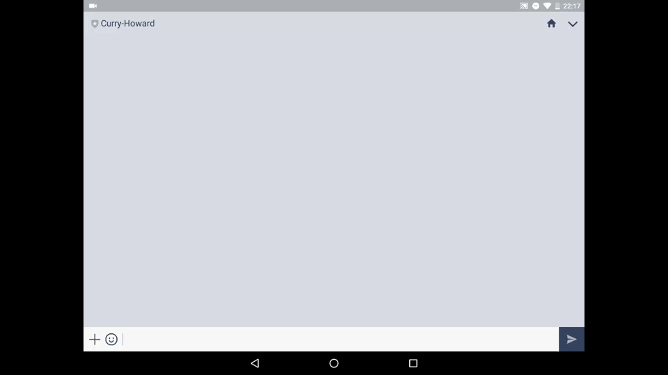

Haskell で LINE Bot を作った
GitHub で LINE Messaging API の Haskell 版 SDK があった ので作ってみた． リポジトリはこちら．
Bot の友達登録も README に載せたんでそっちからどーぞ．
いきさつ
先日行ってきた，エンジニアMEETUP!!で発表する用に，何かネタ感のあることをしたかった．
最初は LINE BOT AWARD 用に作った Score Bot の話をしようかと思ったが，話が普通すぎるので，他に何か面白そうなのが無いかを考えた結果．
どんな Bot か
Bot 自体の機能は どーでもよかった ので適当に考える． Haskell にあやかって，Curry-Howard 同型対応を返す Bot にすることにした． 「型付きラムダ計算」って送ると「自然演繹」と返ってくるイメージ．
しょうもない．
環境
開発環境
貧乏学生なので Heroku を使おう．
- Windows 10 Home
- Haskell Stack LTS 8.1 (GHC 8.02)
- Heroku (stack の buildpack を使う)
依存ライブラリ
下の2つだけ
- Haskell SDK for LINE Messaging API
- Haskell Web Application Interface
と，Heroku で Haskell を build するための buildpack．
- Heroku buildpack for Haskell Stack
Haskell on Heroku というのもあったが，S3がどーのこーのとめんどくさそうだったので，まずは簡単そうなこっちでやってみた． で，うまくいったのでこの buildpack で十分．
実装
stack と リポジトリの準備
余計かな．
$ stack new curry-howard-linebot
$ git init不必要なのが多いので cabal ファイルを編集し，要らんコードを削除．
executable curry-howard-linebot-exe
hs-source-dirs: app
main-is: Main.hs
ghc-options: -threaded -rtsopts -with-rtsopts=-N
build-depends: base
, line
, text
, wai
, warp
default-language: Haskell2010
source-repository head
type: git
location: https://github.com/matsubara0507/curry-howard-linebotecho bot
まずはテストがてら echo bot を作った．
その時のソースコードはコチラ．
Haskell SDK にある sample コード が一応 echo bot を作るための handler になってるっぽい． ので，それを参考にしながら，main を補い，不必要な部分は削除して書いた．
{-# LANGUAGE OverloadedStrings #-}
module Main where
import Control.Monad (forM_)
import Data.Maybe(fromJust)
import qualified Data.Text as T (Text, pack, unpack)
import Line.Messaging.API ( APIIO, APIError, ChannelSecret, ChannelAccessToken
, Message(..), runAPI, reply)
import Line.Messaging.Webhook ( Event(..), EventMessage(..), ReplyToken(..)
, ReplyableEvent(..), webhookApp
, defaultOnFailure, getMessage, getReplyToken)
import Line.Messaging.Types (Text(..))
import Network.Wai (Application)
import Network.Wai.Handler.Warp (run)
import System.Environment (lookupEnv)
main :: IO ()
main = do
port <- maybe 8080 read <$> lookupEnv "PORT" :: IO Int
run port app
getChannelSecret :: IO ChannelSecret
getChannelSecret = T.pack . fromJust <$> lookupEnv "CHANNEL_SECRET"
getChannelToken :: IO ChannelAccessToken
getChannelToken = T.pack . fromJust <$> lookupEnv "CHANNEL_TOKEN"
-- | A WAI application to handle webhook requests.
app :: Application
app req f = do
channelSecret <- getChannelSecret
webhookApp channelSecret handler defaultOnFailure req f
handler :: [Event] -> IO ()
handler events = forM_ events handleEvent
handleEvent :: Event -> IO ()
handleEvent (MessageEvent event) = handleMessageEvent event
handleEvent _ = return ()
handleMessageEvent :: ReplyableEvent EventMessage -> IO ()
handleMessageEvent event = do
case getMessage event of
TextEM _ (Text text) -> echo (getReplyToken event) text
_ -> echo (getReplyToken event) "undefined message"
api :: APIIO a -> IO (Either APIError a)
api = runAPI getChannelToken
echo :: ReplyToken -> T.Text -> IO ()
echo replyToken content = do
api $ reply replyToken [ Message . Text $ content ]
return ()LINE Bot に webhook するためにはシークレットキーが必要で，API を叩くためにはAPIトークンが必要． どちらも，環境変数から取ってきたかったので lookupEnv で取ってきている． エラー処理も何もしていないので，改善の余地ありですね． ChannelSecret 型も ChannelAccessToken 型も一般的な Text 型(lineライブラリには別の意味の Text 型があるので注意)のエイリアスなので，T.pack して変換してる．
他は，まぁ，Haskell で Web 系のアプリ書くと，こうなるんだろーなという感じに書いてある(サンプルそのまんま)．
Bot の準備
LINE Bot のアカウントの取得と Heroku アプリを作成． それぞれ公式サイトでカチカチやってればできるはず(ないしはググれば腐るほど出てくる)．
カチカチして Heroku アプリを作った場合は，まずはリポジトリにリモート設定する．
$ heroku git:remote -a <app-name>次に buildpack を設定．
$ heroku buildpacks:set https://github.com/mfine/heroku-buildpack-stackそしたら後はデプロイするだけ．
$ git push heroku master初めは時間がかかるけど，無事にビルド出来るはず．
Curry-Howard 同型対応を返す
データベースをいじるのはめんどくさいのでハードコーディング．
curryHowardCorrespondence :: [([Text], [Text], URL)]
curryHowardCorrespondence =
[ ( ["Natural Deducation", "自然演繹"]
, ["Typed Lambda Calclus", "型付きラムダ計算", "単純型付きラムダ計算", "型付きλ計算", "単純型付きλ計算"]
, "http://disi.unitn.it/~bernardi/RSISE11/Papers/curry-howard.pdf")
, ( ["Sequent Calculus", "シーケント計算"]
, ["Typed Lambda Calclus", "型付きラムダ計算", "単純型付きラムダ計算", "型付きλ計算", "単純型付きλ計算"]
, "http://disi.unitn.it/~bernardi/RSISE11/Papers/curry-howard.pdf")
, ( ["System F"]
, ["Polymorphic Lambda Calculus", "2階ラムダ計算", "多相ラムダ計算", "2階λ計算", "多相λ計算"]
, "http://disi.unitn.it/~bernardi/RSISE11/Papers/curry-howard.pdf")
, ( ["Modal Logic", "様相論理"]
, ["Mondad", "モナド"]
, "http://www.sciencedirect.com/science/article/pii/S0304397596001697")
, ( ["Linear Logic", "線形論理"]
, ["Session Type", "セッション型"]
, "http://ctp.di.fct.unl.pt/~btoninho/mscs12.pdf")
]対応表はこのスライドを参考にして証明が載ってそうな論文を探した(大変)．
これを参照して取ってくるように echo bot を書き換える． Haskell プログラミングはトップダウン．
handleMessageEvent :: ReplyableEvent EventMessage -> IO ()
handleMessageEvent event = do
case getMessage event of
TextEM _ (Text text) -> echo (getReplyToken event) (getCorrespondence text)
_ -> echo (getReplyToken event) "undefined message"
getCorrespondence :: Text -> Text
getCorrespondence = undefined見つからない場合を考慮して分ける．
getCorrespondence :: Text -> Text
getCorrespondence = fromMaybe "unknown..." . lookupCorrespondence
lookupCorrespondence :: Text -> Maybe Text
lookupCorrespondence txt = undefinedあとは適当に
lookupCorrespondence :: Text -> Maybe Text
lookupCorrespondence txt = msum $ fmap match curryHowardCorrespondence
where
txt' = toLower txt
match (as, bs, url)
| any ((==) txt' . toLower) as = appendUrl url <$> safeHead bs
| any ((==) txt' . toLower) bs = appendUrl url <$> safeHead as
| otherwise = Nothing
appendUrl :: URL -> Text -> Text
appendUrl url = unwords . (: [url])
safeHead :: [a] -> Maybe a
safeHead = find (const True)toLower してるのは英字の大文字小文字の違いを無視するため．
実行

おしまい
一日ぐらいでサクッと作れた． LINE Bot に慣れたというのもあるが，それ以上にライブラリのおかげでしょう．
最初に stack build した時に，2,3個しか依存するライブラリ書いてないのに，100個ほどインストール(依存ライブラリに依存するライブラリを含む)されたときには，「巨人の肩に乗ってるなー」と感じた．